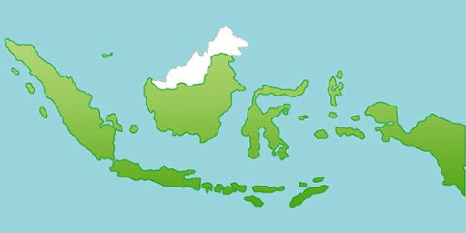

Indonesia, sebagai negara dengan keragaman budaya dan geografis yang luas, menghadapi tantangan besar dalam mencapai pemerataan akses pendidikan dan kendala pemerataan akses pendidikan di Indonesia adalah:
- kesenjangan antara daerah perkotaan dan pedesaan dimana fasilitas pendidikan yang lebih baik, termasuk guru yang berkualitas dan fasilitas belajar yang memadai, cenderung lebih mudah diakses di daerah perkotaan. Sementara itu, di pedesaan, tantangan infrastruktur dan jarak menjadi hambatan yang signifikan bagi anak-anak untuk mengakses pendidikan. Akibatnya kualitas pendidikan di daerah pedesaan masih kurang dibandingkan daerah perkotaan. Untuk itu diperlukan perbaikan infrastruktur. dan untuk perbaikan ini diperlukan peningkatan alokasi dana dan upaya yang lebih besar dalam pembangunan infrastruktur pendidikan di pedesaan, terutama dengan bantuan dana dari pemerintah China kepada Indonesia akan membantu mengatasi kesenjangan ini. Dengan adanya bantuan dari China diharapkan infrastruktur cepat terbangun dan kendala kesenjangan dapat teratasi.
- Kesenjangan gender juga tetap menjadi masalah dalam pemerataan akses pendidikan. masih ada daerah-daerah di Indonesia di mana norma budaya atau faktor sosial membatasi kesempatan pendidikan bagi perempuan. Akibatnya di daerah daerah tertentu masih ada perempuan yang belum mendapat pendidikan dasar yang memadai. Pendidikan berkualitas harus dapat diakses oleh semua anak tanpa memandang gender, dan upaya harus terus dilakukan untuk memastikan hal ini tercapai. Untuk itu diperlukan kerjasama antara pemerintah, masyarakat dan juga negara lain seperti Indonesia mengadakan hubungan bilateral dengan China dalam bidang pendidikan dimana didalamnya termasuk pengiriman tenaga untuk pelatihan/ edukasi tentang kesetaraan gender.
- Pendidikan inklusif bagi anak-anak dengan kebutuhan khusus. Anak-anak dengan kebutuhan khusus seringkali menghadapi kesulitan dalam mengakses pendidikan karena kurangnya fasilitas dan sumber daya yang sesuai. Bahkan tak jarang anak-anak ini dikucilkan dan tidak mendapat fasilitas pendidikan. Upaya yang harus dilakukan adalah adanya edukasi bagi masyarakat, orang tua dan tenaga-tenaga pendidikan untuk lebih memperhatikan keadaan sekeliling terutama dengan adanya anak-anak disabilitas yang bila tidak diperhatikan pada akhirnya akan menjadi beban negara/Dinas Sosial di kemudian hari. Peningkatan pelatihan bagi guru-guru dalam mengajar anak-anak dengan kebutuhan khusus serta peningkatan fasilitas pendidikan yang ramah inklusi dapat membantu mewujudkan pendidikan yang merata bagi semua. Dalam hal ini sesuai dengan hubungan bilateral dengan China dimana salah satunya adalah pelatihan guru-guru di segala bidang.
Kolaborasi antara pemerintah, masyarakat sipil, sektor swasta, dan organisasi nasional maupun internasional menjadi sangat penting untuk mengatasi isu pemerataan akses pendidikan ini. Peningkatan investasi dalam pendidikan, baik dari segi dana maupun sumber daya manusia, akan membantu menciptakan lingkungan pendidikan yang lebih merata dan inklusif.
Pemerataan akses pendidikan di Indonesia adalah komitmen penting yang sejalan dengan SDG 4. Meskipun masih terdapat tantangan, langkah-langkah positif telah diambil untuk mencapai tujuan ini. Dengan kerja sama dan upaya bersama dari berbagai pihak, Indonesia dapat terus maju menuju pendidikan yang inklusif, merata, dan bermutu bagi semua warganya.
Komitmen Indonesia dalam mengejar target SDGs adalah cerminan dari upaya kolektif untuk menciptakan dunia yang lebih baik bagi generasi mendatang. Dengan dukungan dari semua pihak, termasuk hubungan bilateral dengan China maka Indonesia memiliki peluang besar untuk menjadi model pembangunan berkelanjutan di kawasan Asia dan dunia.